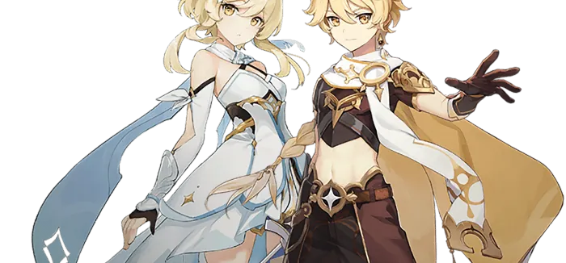

Genshin Impact · Light Novel
Genshin Impact
Hành Trình Của Nhà Lữ Hành
Light novel tiếng Việt chuyển thể cốt truyện Genshin Impact, theo chân Nhà Lữ Hành Lumine đi tìm người anh trai song sinh.

Mục lục
Mở Đầu

Mở Đầu · Màn 1 Ma ThầnNgười Phương Xa Đuổi Theo GióNhiệm vụ Ma Thần — Mondstadt · 10 chương
Mở Đầu · Màn 1 Ma Thần
Người Phương Xa Đuổi Theo Gió
Nhiệm vụ Ma Thần — Mondstadt · 10 chương
 Mở Đầu · Màn 1.1 Nhiệm vụ bắt buộcBa Ngôi Đền Của Tứ PhongNhiệm vụ bắt buộc để hoàn thành Màn 1 — Amber, Kaeya, Lisa · 4 chương
Mở Đầu · Màn 1.1 Nhiệm vụ bắt buộcBa Ngôi Đền Của Tứ PhongNhiệm vụ bắt buộc để hoàn thành Màn 1 — Amber, Kaeya, Lisa · 4 chương
Mở Đầu · Màn 1.1 Nhiệm vụ bắt buộc
Ba Ngôi Đền Của Tứ Phong
Nhiệm vụ bắt buộc để hoàn thành Màn 1 — Amber, Kaeya, Lisa · 4 chương